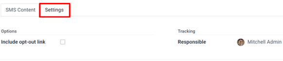
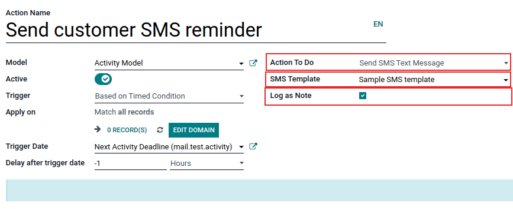

Fundamentos de SMS¶
El contacto por SMS en las estrategias de comunicación puede ayudar a las empresas a expandir su alcance en el mercado, sobre todo en algunos países donde hacer uso del correo electrónico no es muy común o incluso no se utiliza.
La aplicación Marketing por SMS también puede ayudar a aumentar las tasas de conversión en torno a acciones valiosas, como el registro a eventos, pruebas gratis, compras, etc., ya que los canales de marketing basados en texto y móvil suelen tener mejores resultados de CTOR y CTR.
Tablero de Marketing por SMS¶
Cuando se abre la aplicación, Odoo muestra el tablero principal de Marketing por SMS, el cual muestra los diversos envíos de SMS que se han creado, junto con la información pertinente y los datos relacionados con ese mensaje en específico.
La vista de kanban es la que Odoo utiliza de forma predeterminada cuando se abre la aplicación, muestra una visualización organizada de los SMS que se han creado y cuál es su estado actual.
Nota
Un SMS puede estar en alguno de los siguientes estados: Borrador, En cola, Enviando o Enviado.
En la esquina superior derecha del tablero principal de Marketing por SMS hay varias opciones de vista entre las que elegir. Cada una de ellas ofrece una visión única de la misma información del SMS.
La vista de lista proporciona los mismos datos útiles relacionados con el envío de SMS, pero en un diseño de lista más tradicional.
La vista de calendario proporciona un calendario simple, lo que facilita ver cuándo se enviarán los SMS (o cuando se enviaron). Si se hace clic en una fecha futura, Odoo abre una plantilla de SMS en blanco que, una vez completada, se programará para enviarse en esa fecha específica en el futuro.
Por último, la vista de gráfico muestra los mismos datos relacionados con SMS en series de gráficos y diagramas. Odoo también proporciona varias formas de ordenar y agrupar los datos para un análisis más detallado.
Crear mensajes de SMS¶
Para empezar, haga clic en crear en el tablero principal de Marketing por SMS, Odoo abrirá un formulario de plantilla de SMS en blanco, el cual se puede configurar de distintas formas.

Primero, agregue un asunto para el envío, el cual describe de qué trata.
A continuación, en el campo destinatarios, elija a quién se le enviará este SMS. De forma predeterminada, Odoo selecciona lista de correo. Si esta es la opción deseada en el campo destinatarios, especifique a qué lista de correo Odoo debe enviar este SMS en el campo seleccionar lista de correo.
Nota
Vaya a para crear (o editar) una lista de correo. Ahí, Odoo muestra todas las listas de correo creadas con anterioridad, junto con varios tipos de datos relacionados con esa lista en específico (por ejemplo, número de contactos, envíos, destinatarios y otra información).
Consulte Listas de correo y listas de exclusión para obtener más información sobre listas de correo y contactos.

Para abrir todas las posibles opciones del campo Destinatarios haga clic allí y podrá ver todas las opciones disponibles en Odoo.
Cuando selecciona otro campo (que no sea lista de correo), aparece la opción de especificar aún más ese campo elegido, ya sea con una ecuación de filtro de destinatario predeterminada que aparece en automático (y se puede personalizar para cualquier empresa). Si no hay una ecuación de filtro de destinatario predeterminada, aparecerá el botón Agregar filtro.
Hacer clic en el botón Agregar filtro agrega campos de reglas de dominio totalmente personalizables que se pueden configurar de forma similar a una ecuación. Puede crear varias reglas de destinatario si es necesario.
Odoo solo enviará el SMS a los destinatarios que cumplan con los criterios configurados en esos campos. Tome en cuenta que es posible agregar varias reglas.
Example
En caso de seleccionar contacto, todos los registros de contacto en la base de datos de Odoo (proveedores, clientes, entre otros) recibirán el SMS de forma predeterminada, a menos hayan reglas de destinatarios más específicas.
Por ejemplo, el siguiente mensaje solo se enviará a los contactos de la base de datos que se ubican en los Estados Unidos (por ejemplo, País > Nombre del país es igual a Estados Unidos) y que no formen parte de una lista de exclusión de correo (por ejemplo, Lista de exclusión > es > no establecido).
Escribir mensajes de SMS¶
Introduzca el contenido del SMS en el campo de texto de la pestaña contenido del SMS. Puede incluir enlaces y emojis. Odoo muestra debajo del texto cuántos caracteres se utilizan en el mensaje, junto con cuántos envíos de SMS se necesitarán para entregar el mensaje completo.
Truco
Haga clic en el icono información para revisar el precio de enviar un SMS para un país.
Nota
Debe comprar créditos en Odoo para aprovechar al máximo la aplicación Marketing por SMS, los mensajes de SMS no se enviarán si no tiene créditos.
Ver también
Rastrear los enlaces que se utilizan en mensajes de SMS¶
Cuando se usan enlaces en mensajes de SMS , Odoo genera de manera automática rastreadores de enlaces para recopilar datos analíticos y métricas relacionadas con esos enlaces específicos. Se pueden encontrar en .
Configurar los ajustes de SMS¶
En la pestaña Ajustes de la plantilla de SMS se encuentra la opción para incluir enlace de exclusión. Si se activa, el destinatario puede darse de baja de la lista de correos para no recibir cualquier correo futuro.
También se puede determinar a un empleado como Responsable en la sección seguimiento de la pestaña Ajustes.
Enviar mensajes SMS¶
Una vez que se crea un envío, elija el momento en que Odoo debe entregar el mensaje entre las siguientes opciones:
Enviar: envía el mensaje de forma inmediata. Considere usar esta opción si la lista de destinatarios es sobresaliente, o en casos que involucran una fecha límite cercana, como una oferta relámpago.
Planificar: elija un día (y hora) para que Odoo haga el envío. Por lo general esta es la mejor opción para los mensajes relacionados con un evento específico. Este método también se puede utilizar para promover una oferta de tiempo limitado, o para ayudar a planificar la estrategia de contenido de una empresa con anticipación.
Prueba: permite enviar un SMS a uno o varios números con fines de prueba. Recuerde usar una coma entre números telefónicos si se usan varios números como destinatarios.
Visualización de reportes¶
En la página Reportes (a la que puede acceder con la opción en el menú superior) hay opciones para aplicar distintas combinaciones de filtros y medidas para visualizar las métricas en diferentes presentaciones (por ejemplo, las vistas de gráfico, lista y cohorte).
Cada opción de vista métrica en Reportes permite un análisis más extenso de rendimiento de los mensajes SMS.
Por ejemplo, mientras la vista predeterminada es gráfico, los datos de los SMS se visualizan como diferentes gráficos y tablas que se pueden ordenar y agrupar de varias maneras (p. ej., el menú desplegable guilabel:Medidas).

Truco
Las acciones automatizadas de Odoo permiten enviar mensajes SMS y para hacer uso de estas acciones es necesario contar con la aplicación Studio.
Vaya a para instalar Studio de Odoo. En la barra de búsqueda escriba studio.
Haga clic en clic Instalar si aún no está instalada.
El estado de su suscripción cambiará a Personalizado al agregar la aplicación Studio, lo que aumenta el costo. Comuníquese con soporte o su gerente de la base de datos si tiene alguna pregunta sobre este cambio.
Active el modo de desarrollador para utilizar acciones automatizadas, vaya a y después haga clic en Nuevo para crear una acción.
Escriba el nombre de la acción y seleccione el modelo en el que se implementará esta acción.
Asegúrese de que el botón Activo esté encendido, (está representado por un botón verde), solo así se llevará a cabo la acción automatizada.
Configure el campo Activar con Al crear, Al actualizar, Al crear y actualizar, Al eliminar, Según la modificación de formulario o Según la condición de tiempo.
Pueden aparecer otros campos según lo que haya elegido en el campo Activar.
Es posible crear un filtro de registros con un dominio en el campo Aplicar en. Asegúrese de haber seleccionado un modelo antes de establecer cualquier dominio en el campo anterior. Haga clic en Editar dominio para establecer los parámetros de registro.
Seleccione Enviar mensaje de texto SMS en el campo desplegable Acción a realizar, establezca la plantilla de SMS y elija si el mensaje SMS se debe registrar como nota con la casilla ubicada junto a la opción correspondiente.
Para implementar la acción automatizada puede guardarla dirigiéndose a otra parte o de forma manual (con el icono ☁️ (nube)).